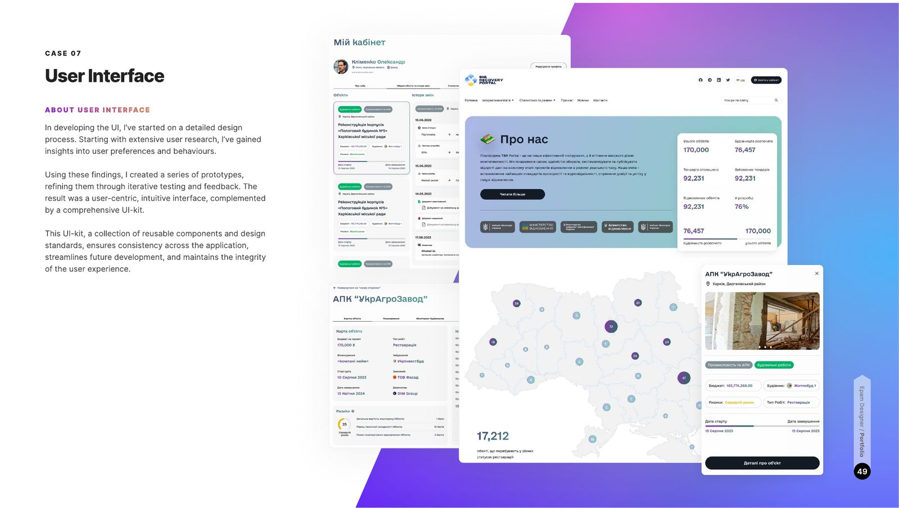

A government-tender concept for a portal tracking the recovery of buildings in areas affected by russian attacks: current status of each building, detailed cost analysis, sponsor and developer profiles — transparent, accessible tracking for all stakeholders, with real-time updates and robust protection of sensitive data.